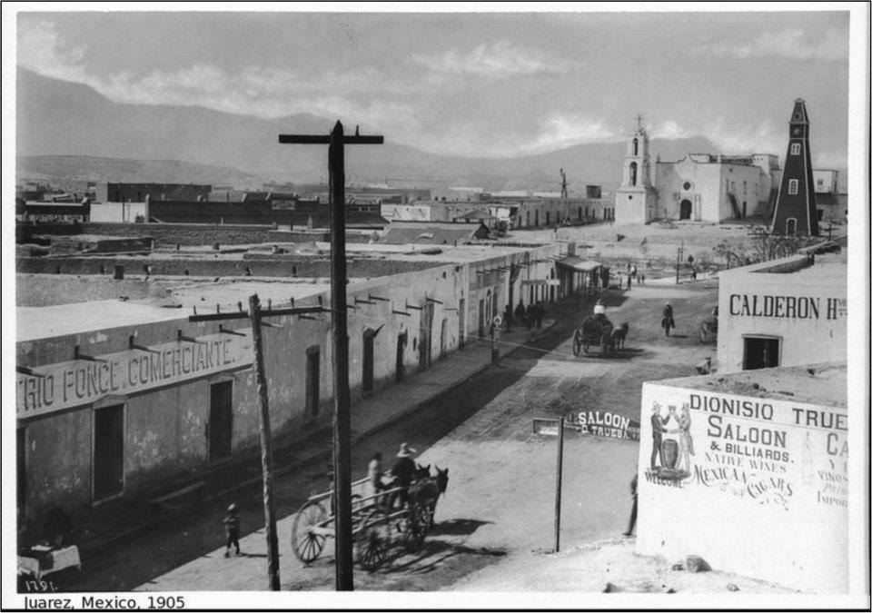

Ciudad Juárez es una ciudad mexicana ubicada en el estado de Chihuahua, en la frontera con Estados Unidos. Su historia es rica y diversa, marcada por la influencia de diversas culturas y acontecimientos históricos significativos. Desde su fundación en 1659, la ciudad ha sido testigo de la llegada de colonos españoles, la lucha por la independencia de México, la Revolución Mexicana, la Prohibición y el auge del narcotráfico. Además, Ciudad Juárez también ha sido un lugar de encuentro y cruce de culturas, donde la influencia de la cultura mexicana y estadounidense se fusionan para crear una identidad única. En esta presentación, exploraremos los aspectos más importantes de la historia de Ciudad Juárez, desde sus orígenes hasta la actualidad.
